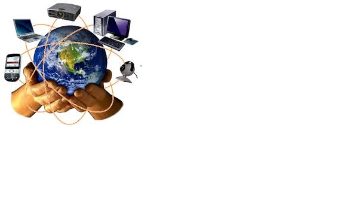

À propos de moi
Date de naissance : 03 janvier 1991
Lieu de naissance : Banfora, BURKINA FASO
Je suis SORY Abdel Karim , passionné de l informatique je me forme au developpement web et au technologie réseaux dans le cadre de ma formation . Mon parcours illustre une volonté constante d’apprendre et de transmettre.
Je m'interesse particulièrement au html,au css et à la programmation